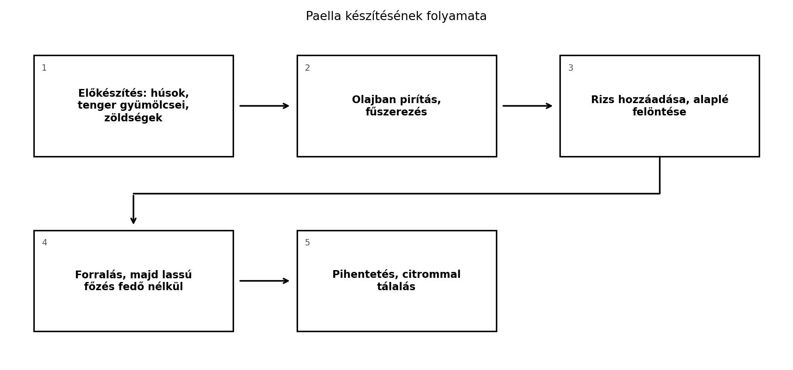

Képzeld el, hogy egy nyári hétvégén a vendégek a teraszon ülnek, és a séf azt kéri tőled: „Készíts egy friss tésztát garnélával, utána pedig egy paellát a csoportnak.” A mediterrán konyha nem egzotikus különlegesség: a mindennapi vendéglátásban is alap. Ha ismered az olívaolaj, a paradicsom, a fokhagyma, a friss tészta és a rizses egytálételek szabályait, akkor ezeket az ételeket gyorsan, biztonságosan és a vendég elégedettségére készíted el. Ha nem, a tészta szétfő, a rizs ragacsos lesz, a tenger gyümölcsei pedig gumiszerűvé válnak, és a vendég allergiás panasszal távozhat.
A mediterrán konyha középpontjában a napfényes tányér áll: piros paradicsom, zöld fűszernövények, sárga citrom, aranyszínű olívaolaj és fehér tészta vagy rizs. A konyhai munkafolyamat is réteges, mint egy paella: előkészítés, pirítás, folyadék hozzáadása, lassú főzés, pihentetés. Az alábbi folyamatábra a paella készítését mutatja, mert ez a tenger gyümölcsei és a rizs miatt élelmiszer-biztonsági szempontból is a legtanulságosabb.

Definíció. A mediterrán konyha az Európa déli, Földközi-tenger menti országainak – elsősorban Olaszország, Spanyolország, Görögország, Dél-Franciaország – közös alapanyag-használatán és konyhatechnológiáján alapul. Jellemzője a friss zöldségek, gyümölcsök, hüvelyesek, gabonafélék, halak, tenger gyümölcsei, olívaolaj, fokhagyma, paradicsom, friss fűszernövények (bazsalikom, rozmaring, kakukkfű, oregánó), citrom, olajbogyó, kapribogyó és a kisebb mennyiségű vörös hús, valamint a mérsékelt tejtermék- és borfogyasztás. A mediterrán étrend a táplálkozástudományban a telítetlen zsírsavakban gazdag, sok zöldséget és halat tartalmazó minta, amelyet a szív- és érrendszeri betegségek megelőzésével hoznak összefüggésbe (ellenőrizendő: epidemiológiai ajánlások).
Összefüggés. A mediterrán alapanyagok – olívaolaj, paradicsom, fokhagyma, friss fűszernövények, citrom, olajbogyó, kapribogyó – nemcsak Olasz-, Spanyol- és Görögországban jelennek meg, hanem a francia konyha már tárgyalt alapjait is gazdagítják, és a következő, Az angol, a német és a skandináv konyha alfejezetben összehasonlítjuk őket a hidegebb éghajlatú konyhákkal.
Az olívaolaj a fő zsiradék: hidegen sajtolt változata salátákra és befejezésre, a finomított vagy sütésre alkalmas változat pedig hőkezelésre való. A paradicsom frissen, konzervben, passzírozva és szárított formában is alap. A fokhagyma és a friss zöldfűszerek adják a jellegzetes illatot. A citrusfélék – citrom, narancs – savasságot és frissességet visznek az ételekbe, a tenger gyümölcsei pedig fehérjét és ásványi anyagokat.
Az olasz konyhát a tésztafélék, a rizottó, a pizza, a sokféle előétel (antipasti) és a desszertek, például a tiramisu jellemzi.
A friss tészta lisztből, tojásból, kevés sóból és olívaolajból készül. A tészta sikérhálója a gyúrás és a pihentetés során alakul ki, ezért nem szabad kihagyni a pihentetést: enélkül a tészta nyújtás közben visszaugrik, főzéskor pedig szétfő. A friss tészta főzése rövid, általában 2–3 perc forrásban lévő sós vízben, ezért a tésztát vékonyra kell nyújtani.
Továbbvitt eredmény. A friss tészta gyúrását és pihentetését a Malomipari termékek előkészítése és az alaptészták alfejezetben tanult alaptészták logikája szerint végezzük: a liszt–folyadék arány, a sikérpihentetés és a vékony nyújtás itt is érvényes.
A rizottó rövid szemű rizsből (arborio, carnaroli, vialone nano – ellenőrizendő: fajtanevek) készül. A rizst először zsiradékban megfuttatjuk, majd forró alaplével fokozatosan, kis merőkanállal öntögetve, gyakori keveréssel főzzük. A keményítő kioldódik, és krémes állagot ad. A rizottó akkor jó, ha a szemek még enyhén haraphatók (al dente), de nem nyersek. A befejezéshez vajat és reszelt parmezánt adunk, ami tovább krémesíti. A rizottó azonnali tálalást igényel, mert állás közben tovább sűrűsödik.
A pizza tésztája lisztből, vízből, élesztőből, sóból és olívaolajból készül. Az olasz pizza vékony, a széle levegős, a feltét pedig kevés, jó minőségű: paradicsomszósz, mozzarella, friss bazsalikom, olívaolaj. A sütés magas hőmérsékleten, lehetőleg 300 °C felett történik, ezért a vendéglátásban gyakran speciális pizzasütőt használnak. A magas hőmérséklet gyorsan süti meg a tésztát, így a feltét nem szárad ki.
Higiénia. A pizza feltétjei gyakran tartalmaznak tejet (mozzarella), glutént (tészta), és keresztszennyeződhetnek húsfeltétekkel. Allergiás vendég esetén külön deszkát, külön feltétadagolót és tiszta sütőfelületet kell használni.
Az antipasti hideg vagy meleg előételek: pácolt zöldségek, olajbogyó, sonka, szalámi, sajt, bruschetta. A bruschetta pirított kenyérszelet paradicsommal, fokhagymával és bazsalikommal. Az előételválogatásnál ügyelni kell a hűtési láncra, mert a sonka és a sajt könnyen romló nyersanyag.
A tiramisu rétegzett desszert: kávéba mártott babapiskóta, mascarponekrém és kakaópor. A hagyományos recept nyers tojást használ a krémben, ami ételfertőzés kockázatát hordozza. Vendéglátásban a tiramisu krémjét pasztőrözött tojássárgájából/-fehérjéből, főzött (pâte à bombe) alapból vagy tojás nélkül készítjük; nyers, nem pasztőrözött tojást nem használunk. Várandósnak, kisgyermeknek, idősnek és legyengült immunrendszerűnek lágy tojásos krémet nem adunk, a tájékoztatás és a hűtés ezt nem pótolja (ellenőrizendő: NÉBIH-útmutató / HACCP-terv).
A spanyol konyha a tenger gyümölcsei, a rizs, a sonka, a kolbász, a paprika, a sáfrány és az olívaolaj használatáról ismert.
A paella eredetileg Valencia környéki egytálétel, amelyet széles, sekély serpenyőben (paellera) készítenek. Lényege, hogy a rizs a húsok és tenger gyümölcsei által kiadott, valamint az alapléből származó folyadékot magába szívja, miközben a serpenyő alján enyhén megpirul (socarrat). A rizst nem keverjük főzés közben, mert a keverés feltöri a szemeket és ragacsossá teszi az ételt.
Kritikus pont. A paella összetett étel: egyszerre készül benne baromfi, esetleg tenger gyümölcsei és rizs. A csirkehús és a garnélák biztonságos maghőmérséklete legalább 75 °C (ellenőrizendő: NÉBIH-útmutató). A rizs főzése forralással történik, de a húsdaraboknak is el kell érniük a maghőmérsékletet, tehát a húst előbb pirítsd meg, és csak utána add hozzá a rizst. A maradék paellát gyorsan hűtsd le, mert a főtt rizsben a Bacillus cereus spórái elszaporodhatnak; a visszahűtés idejét a HACCP-terv rögzíti (ellenőrizendő: konkrét idő/tartomány).
A tapas kis adagokban kínált hideg vagy meleg ételek: olajbogyó, sonka, sajt, pácolt hal, fokhagymás garnéla, tortilla española (burgonyás tojáslepény). A tapas bárban a pultban kínált ételek hűtési és keresztszennyeződési kockázatot hordoznak: a hideg, nyers vagy kész étel mellé nem kerülhet nyers hús leve, és a készételeket fedve, hűtve kell tartani.
A gazpacho andalúz hideg zöldségleves: nyers paradicsom, uborka, paprika, fokhagyma, olívaolaj, borecet, só és gyakran kenyér a sűrítéshez. A kenyér miatt glutént tartalmaz. A hideg leves fogyasztásakor a zöldségek nyersek, ezért a mosásnak és a hűtve tárolásnak kiemelt jelentősége van. A gazpacho jól példázza, hogy a mediterrán konyha a nyers, friss alapanyagokra épít, ezért az élelmiszer-biztonsági fegyelem nem csak a húsoknál fontos.
A görög konyha a padlizsánt, a joghurtot, a feta sajtot, az olívabogyót, a citromot és a friss fűszernövényeket gyakran használja.
A muszaka réteges sült étel: elősütött padlizsánszeletek, fűszeres darált hús paradicsommal, a tetején besamelmártás. A besamel lisztből, vajból, tejből és gyakran tojásból készül, ezért a muszaka glutént, tejet és tojást tartalmaz. Az étel sütőben, magas hőmérsékleten átsül, a besamel aranyszínű kérget kap. A padlizsán keserű leve elősütéssel csökkenthető, és a rétegezésnél a húsos ragu ne legyen túl nedves, különben a sütés közben a lé felpuhítja a padlizsánt.
Allergén. A muszaka egyszerre több fő allergént tartalmaz: glutén (besamel), tej (besamel, esetleg sajt a tetején), tojás (besamel). A görög muszaka hagyományosan nem tartalmaz dióféléket, de egyes változatok dióval szórják a tetejét – ezt jelezni kell.
A tzatziki hideg joghurtos mártogató: sűrű joghurt, lereszelt és kinyomkodott uborka, fokhagyma, olívaolaj, citromlé vagy ecet, só, gyakran friss kapor vagy menta. Tejallergén (joghurt) miatt jelölésköteles. A tzatziki hidegen, hűtve tárolandó, és frissen készítve a legjobb, mert az uborka vizet ereszt.
Jogszabály. Az Európai Unióban a hagyományos, adott földrajzi területhez kötődő élelmiszerek neve oltalom alatt állhat: oltalom alatt álló eredetmegjelölés (OEM/PDO) vagy oltalom alatt álló földrajzi jelzés (OFJ/PGI). A vendéglátásban az étlapon nem használhatjuk a védett nevet akkor, ha a termék nem felel meg az előírásnak. Példák: Parmigiano Reggiano (PDO), Prosciutto di Parma (PDO), Mozzarella di Bufala Campana (PDO), San Marzano paradicsom (PDO), görög feta (PDO). A pontos terméklista változhat, ezért a konyhán a beszerzési bizonylat és a termék címkéje a mérvadó (ellenőrizendő: aktuális uniós oltalom alatt álló termékjegyzék).
Adagszám: 10 adag; adagsúly: kb. 150 g nyers, 200–220 g főtt tészta (ellenőrizendő: próbafőzés).
Anyaghányad-táblázat
| Nyersanyag | Mennyiség 10 adagra | Megjegyzés |
|---|---|---|
| BL55 finomliszt | 1000 g | szobahőmérsékletű |
| Tojás (M) | 10 db | kb. 500 g; allergén: tojás |
| Só | 10 g | 1 g/100 g liszt |
| Olívaolaj | 20 ml | a tészta rugalmasságához |
| Durumbúzadara | 50 g | nyújtáshoz, formázáshoz (opcionális) |
Allergének: glutén (liszt), tojás.
Eszközök: gyúródeszka, kés, sodrófa vagy tésztanyújtó gép, derce, lisztszita.
Előkészítés 1. A lisztet szitáld a deszkára, keverd el a sóval. 2. A közepébe készíts mélyedést, üsd bele a tojásokat, add hozzá az olajt. 3. Villával fokozatosan keverd a lisztet a tojáshoz, majd kézzel gyúrd sima, rugalmas tésztává. 4. Fóliába csomagolva pihentesd hűtőben legalább 30 percig. 5. A pihentetett tésztát lisztezett felületen nyújtsd ki vékonyra, majd vágd a kívánt szélességű csíkokra.
Tésztanyújtó géppel egyenletesebb vastagság érhető el. A gépet az asztal széléhez rögzíted, és négy lépésben dolgozol: (1) a kézzel lapított tésztát a legszélesebb fokozaton engeded át; (2) harmadolva összehajtod, és ugyanazon a fokozaton 2–3-szor újra átengeded; (3) fokozatonként egyszer átengedve vékonyítod; (4) a vágófeltéttel szalagokra vágod, dercével megszórod, és fészkekbe rendezed.
A géppel dolgozva a tésztát mindig a lapjánál vezesd, az ujjad ne kerüljön a hengerek közé; a hajtókart egyenletesen tekerd. Ha a lap szakad, egy fokozattal vissza kell lépni, és újra hajtogatni. A HTML-kiadásban a gép részei kiemelhetők, a lépések egyenként megnézhetők.
Elkészítés 1. Forralj bő, sós vizet (10 g só/l). 2. A tésztát tedd a forrásban lévő vízbe, keverd meg óvatosan. 3. Főzd 2–3 percig, amíg a tészta feljön a víz felszínére, és a mintavételnél a közepe már nem nyers, de a felülete tapadós. 4. Szűrd le, keverd kevés olívaolajjal vagy vajjal, és azonnal tálald, vagy gyorsan hűtsd le.
Kritikus pontok: A tojásos tészta nyersanyaga tojás, ezért a tésztát hűtve kell tárolni, és 24 órán belül fel kell használni (ellenőrizendő: üzemi HACCP-terv). A főzővíz forrásban legyen, a hőkezelés 2–3 perc; a főtt tésztát 63 °C felett tartsd, vagy gyorsan hűtsd vissza (ellenőrizendő: hőmérsékleti határok).
Készentartás és tálalás: Azonnali tálalásnál az adagot szűrőkanállal emeld ki, csepegtesd le, és rendezd a tányér közepére. Kínálhatod friss paradicsomszósszal, bazsalikommal, reszelt parmezánnal.
Minőségi követelmények: A tészta sima felületű, egyenletes vastagságú, főzve enyhén harapható, nem ragacsos. A színe sárgás, íze enyhén tojásos, illata friss.
Tipikus hibák: Túl vastagra nyújtott tészta: nyers marad a közepe. Túl kevés pihentetés: a tészta nyújtáskor visszaugrik, főzéskor szétfő. Forrásban nem tartott víz: a tészta összeragad.
Változatok: Spenótos tészta (pürésített spenóttal), sáfrányos tészta, tésztagép használatával egyenletesebb vastagság érhető el.
Adagszám: 10 adag; adagsúly: kb. 550–600 g kész étel (héjas kagylóval, csontos csirkével; ellenőrizendő: próbafőzés kitermelése).
Anyaghányad-táblázat
| Nyersanyag | Mennyiség 10 adagra | Megjegyzés |
|---|---|---|
| Paellarizs (pl. bomba) | 800 g | rövid szemű; ellenőrizendő: fajtanév |
| Csirkecomb (bőrös, csontos) | 1500 g | darabolt |
| Garnéla (tisztított) | 500 g | allergén: rákfélék |
| Kagyló (héjas, tisztított) | 1000 g | allergén: puhatestűek |
| Vöröshagyma | 300 g | apró kocka |
| Fokhagyma | 20 g | zúzott |
| Kaliforniai paprika | 300 g | csíkok |
| Paradicsom (konzerv, darabolt) | 400 g | lecsepegtetve |
| Zöldborsó (mirelit) | 200 g | felengedve |
| Olívaolaj | 150 ml | sütéshez és befejezéshez |
| Hal- vagy zöldségalaplé | 2000 ml | forró; allergén: hal, ha halalaplé |
| Sáfrány | 1 g | forró vízben oldva; szemléltető mennyiség |
| Só | 20 g | ízlés szerint |
| Citrom | 2 db | tálaláshoz |
Allergének: rákfélék, puhatestűek, hal (ha halalaplét használsz). Glutént nem tartalmaz, de a kolbásszal készült változatnál ellenőrizd a kolbász összetételét.
Eszközök: paellera vagy széles, alacsony falú serpenyő, habverő, merőkanál, kés, deszka.
Előkészítés 1. A csirkedarabokat ne mosd meg (a fröccsenő víz szétteríti a baktériumokat); ha szükséges, papírtörlővel itasd le, a törlőt azonnal dobd ki, majd sózd, borsozd, és moss kezet (ellenőrizendő: NÉBIH-ajánlás). 2. A garnélákat tisztítsd, a kagylókat válogasd, a nyitva maradtakat dobd ki. 3. A zöldségeket készítsd elő: hagyma, fokhagyma, paprika, paradicsom. 4. Az alaplevet forrald fel, tartsd melegen. 5. A sáfrányt oldd fel kevés forró alaplében.
Elkészítés 1. A serpenyőben hevítsd fel az olívaolajat, és a csirkedarabokat pirítsd aranybarnára minden oldalukon (kb. 8–10 perc). Vedd ki. 2. Ugyanabban a szaftban fonnyaszd meg a hagymát és fokhagymát, add hozzá a paprikát, majd a paradicsomot. 3. Tedd vissza a csirkét, keverd hozzá a rizst, és futtasd át, hogy a szemek bevonódjanak olajjal. 4. Öntsd fel a forró alaplével, add hozzá a sáfrányos levet, és ízesítsd sóval. 5. Forrald fel, majd csökkentsd a lángot, és fedő nélkül főzd kb. 15–18 percig. Ne keverd. 6. Az utolsó 8 percben tedd rá a garnélákat, a kagylókat és a zöldborsót, hogy a tenger gyümölcsei átsüljenek. 7. Amikor a rizs megpuhult, a folyadék felszívódott, és az alja enyhén megpirult, vedd le a tűzről, takard le, és pihentesd 5 percig.
Kritikus pontok: A csirke maghőmérséklete a legvastagabb részén legalább 75 °C legyen (ellenőrizendő: NÉBIH-útmutató). A garnéláknak rózsaszínűnek és feszesnek kell lenniük; a kagylóknak ki kell nyílniuk, a zárt kagylót ne tálald. A kész paellát azonnal tálald; maradékot gyorsan, sekély edényben hűtsd le, és 24 órán belül regeneráld (ellenőrizendő: HACCP-terv).
Készentartás és tálalás: A pihentetett paellát a serpenyőből közvetlenül adagold, citromgerezdekkel, friss petrezselyemmel. A tetejére locsolhatsz kevés extra szűz olívaolajat.
Minőségi követelmények: A rizs szemekben maradt, nem ragacsos, a szín sáfránytól aranysárga. A csirke omlós, a tenger gyümölcsei szaftosak. Az íz sós-könnyed, citrommal friss.
Tipikus hibák: A rizs túlfőtt, mert túl sok folyadékot kapott: az alaplé aránya a rizshez képest általában 2,5:1 (ellenőrizendő: fajtától függ). A serpenyő túl magas fala miatt a rizs nem tud pirulni az alján. A tenger gyümölcsei túlfőttek, mert túl korán kerültek bele.
Változatok: Vegyes paella nyúllal, csigával, zöldbabbal; vegetáriánus paella gombával, articsókával, cukkinivel.
Adott: Egy házi recept 4 adag friss tésztához 400 g lisztet, 4 tojást, 4 g sót és 8 ml olívaolajat ír. Keresett: mennyi alapanyag kell 10 adaghoz?
Képlet: a szorzószám .
Behelyettesítés:
Számítás:
A liszt: ; tojás: db; só: ; olaj: .
Ellenőrzés: Az új adag 2,5-szerese a réginek, a mennyiségek arányosan nőnek. A technológiai lap anyaghányada megegyezik.
A mediterrán ételeknél az érzékszervi ellenőrzés a frissességre és az állagra irányul. A friss tészta főzés után ne legyen nyers vagy szétfőtt; a paella rizse ne legyen ragacsos; a garnéla rózsaszín és feszes; a kagylók nyitottak. A hideg ételeknél (tzatziki, gazpacho) a hőmérséklet legfeljebb 5 °C (ellenőrizendő: HACCP-terv), a meleg paella melegen tartási hőmérséklete legalább 63 °C (a könyv egységes tanulási értéke; ellenőrizendő: HACCP-terv). Az adagsúlyokat a technológiai lap szerint ellenőrizd.
Egy nyári rendezvényen a szakács paellát készített 40 adagban, de a garnélát és a kagylót már a rizszsel együtt tette a serpenyőbe. A rizs 18 percig főtt, így a tenger gyümölcsei túlfőttek, a garnéla kemény, a kagyló összezsugorodott lett. A vendégek panaszkodtak, a konyha pedig a maradékot gyorsan lehűtve akarta másnap felhasználni, de a kagylók egy része zárva maradt. A tanulság: a tenger gyümölcseit a hőkezelés végén kell hozzáadni, és a zárt kagylókat még a tálalás előtt ki kell válogatni, mert azok nem biztonságosak.
1. feladat (A) Nevezd meg a mediterrán konyha öt jellemző alapanyagát, és írd le, mire használjuk az olívaolajat hideg és meleg eljárásokban.
2. feladat (A) Mi a különbség a rizottó és a paella rizsfőzése között?
3. feladat (B) Egy friss tészta recept 6 adaghoz 600 g lisztet, 6 tojást, 6 g sót és 12 ml olívaolajat ad meg. Számold át 10 adagra.
4. feladat (B) A paella technológiai lapján jelöld be a kritikus pontokat: melyik lépésnél kell maghőmérőt használni, és mi a teendő, ha a kagylók nem nyílnak ki?
5. feladat (C) Tervezz egy háromfogásos mediterrán menüt: antipasti, paella, tiramisu. Mely allergéneket kell jelölni a menüsorban?
6. feladat (D) A gyakorlaton készítsd el a friss tésztát 10 adagban a technológiai lap szerint. Milyen állaghibát észlelsz, ha a tésztát nem pihenteted? Végezd el az érzékszervi ellenőrzést, és jegyezd fel a főzési időt.
Önellenőrzés – válaszok:
1. feladat (A) Olívaolaj, paradicsom, fokhagyma, citrom, friss fűszernövények (bazsalikom, rozmaring). Az olívaolajat hidegen salátákra, befejezésre; melegen sütésre, pirításra használjuk. A hidegen sajtolt változatot ne hevítsük magas hőmérsékletre, a sütésre szánt finomított olaj alkalmas hőkezelésre.
2. feladat (A) A rizottónál a rizst folyamatosan keverjük, és az alaplét kis adagokban adagoljuk, hogy a keményítő kioldódjon, és krémes állagot kapjunk. A paellánál a rizst nem keverjük, a folyadékot egyszerre öntjük fel, és a rizs az alján enyhén megpirul.
3. feladat (B) Szorzószám . Liszt: ; tojás: db; só: ; olaj: . (Kerekítve a technológiai lap értékeihez.)
4. feladat (B) Kritikus pont a csirke és a tenger gyümölcsei hőkezelése: a csirke maghőmérséklete a legvastagabb részén legalább 75 °C (ellenőrizendő). A kagylóknak ki kell nyílniuk; amelyik zárva marad, azt ki kell dobni, mert fogyasztásra nem biztonságos.
5. feladat (C) Antipasti: glutén (bruschetta kenyér), tej (sajt), esetleg diófélék. Paella: rákfélék, puhatestűek, hal (ha halalaplé). Tiramisu: glutén (babapiskóta), tojás, tej (mascarpone), esetleg diófélék (ha amaretti kerül bele). A tiramisu krémjét pasztőrözött tojásból vagy tojás nélkül készítjük, és várandósnak, kisgyermeknek, idősnek, legyengült immunrendszerűnek nem adjuk. A menüsorban minden allergént fel kell tüntetni, a szóbeli tájékoztatás mellett írásban is.
6. feladat (D) Ha a tésztát nem pihenteted, nyújtáskor visszaugrik, főzés közben szétfő, a felülete ragacsos lesz. Az érzékszervi ellenőrzésnél a tészta ne legyen nyers, a közepe enyhén harapható, a színe egyenletes. A főzési idő 2–3 perc.
A mediterrán konyha közös alapanyagai az olívaolaj, a paradicsom, a fokhagyma, a friss fűszernövények, a citrom, az olajbogyó, a kapribogyó, a halak és a tenger gyümölcsei. Az olasz konyhát a friss tészta, a rizottó, a pizza, az antipasti és a tiramisu jellemzi. A spanyol konyhából kiemelkedik a paella, a tapas és a gazpacho; a görög konyhából a muszaka és a tzatziki. A friss tésztát pihentetni kell, hogy a sikérháló stabil legyen. A paellában a rizst nem keverjük, a csirke maghőmérséklete legalább 75 °C (ellenőrizendő), a kagylóknak ki kell nyílniuk, a maradékot gyorsan le kell hűteni. A mediterrán alapanyagok ismerete a következő, Az angol, a német és a skandináv konyha alfejezetben összehasonlításra szolgál.
A fejezet támaszkodik a 852/2004/EK élelmiszer-higiéniai rendelet, a NÉBIH jó higiéniai gyakorlat útmutatók, a HACCP-alapú eljárás elveire; a maghőmérsékleti és hűtési határok üzemi HACCP-terv szerint változhatnak (ellenőrizendő: aktuális határok). Az allergénjelölést az 1169/2011/EU rendelet II. melléklete határozza meg (ellenőrizendő: az allergének pontos felsorolása). Az eredetvédett termékek listája és megnevezése az uniós oltalom alatt álló termékjegyzék szerint változhat (ellenőrizendő: aktuális jegyzék). A paella rizs–folyadék aránya és a sáfrány mennyisége szemléltető, az üzemi receptúra a mérvadó.